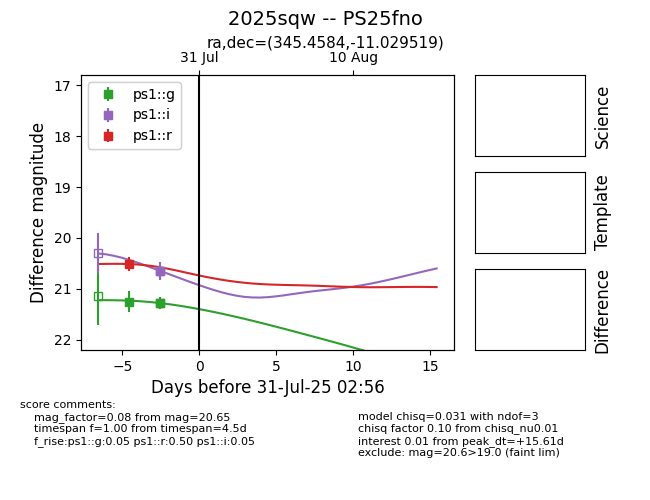

Target 2025sqw at 2025-07-31 02:56, see:
TNS: wis-tns.org/object/2025sqw
YSE: ziggy.ucolick.org/yse/transient_detail/2025sqw
alt names
2025sqw (yse,tns)
PS25fno (panstarrs)
coordinates:
equatorial (ra, dec) = (345.4584,-11.02952)
galactic (l, b) = (59.6209,-59.63006)
photometry
last ps1::g=21.28, ps1::i=20.65, ps1::r=20.51
3 ps1::g, 2 ps1::i, 1 ps1::r detections
